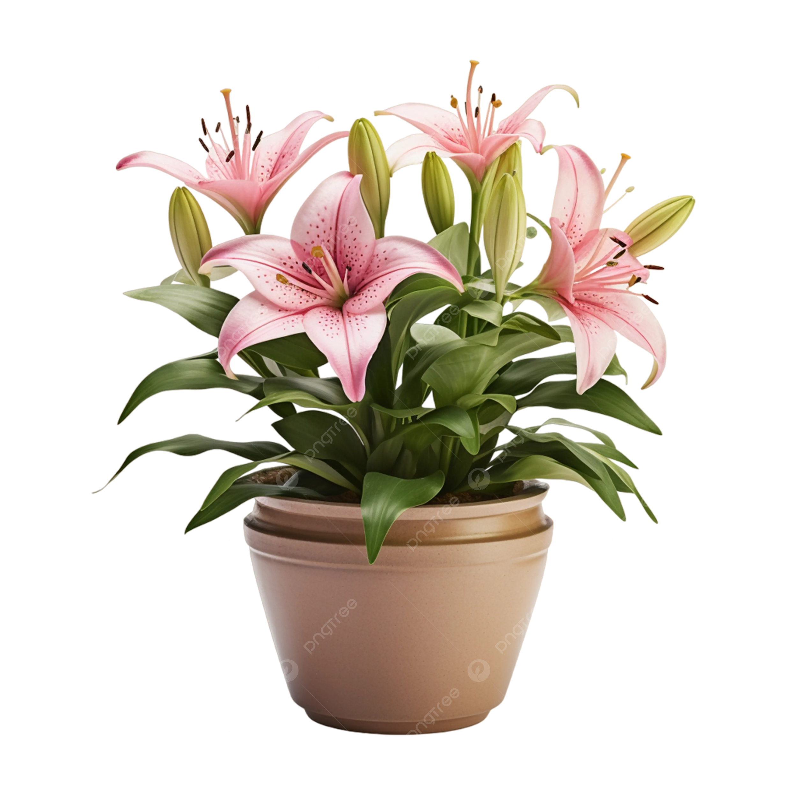
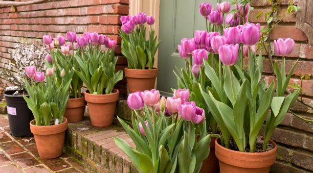

Rosa

La rosa es quizás una de las flores más reconocidas y populares en todo el mundo.
Con sus pétalos suaves y delicados, la rosa viene en una amplia gama de colores, desde
el clásico rojo pasión hasta el delicado rosa, el vibrante amarillo y el puro blanco.
Además de su belleza visual, la rosa también es apreciada por su aroma dulce y distintivo.
Se ha asociado durante mucho tiempo con el amor, la pasión y el romance,
lo que la convierte en una opción popular para regalos románticos y ocasiones especiales como bodas y aniversarios.
video
Lirio
El lirio es una flor elegante y majestuosa que se destaca por sus tallos altos
y sus flores grandes y llamativas. Con sus pétalos acampanados
y sus colores vibrantes, como el blanco puro, el rosa suave y el amarillo brillante,
el lirio agrega un toque de gracia y sofisticación a cualquier arreglo floral.
Además de su belleza estética, el lirio también tiene un aroma distintivo y encantador.
Se asocia comúnmente con la pureza, la inocencia y la renovación, lo que
lo convierte en una opción popular para celebrar ocasiones como nacimientos, bautizos y bodas.
video
Tulipanes
El tulipán es una flor primaveral encantadora conocida por su forma única
y sus brillantes colores. Con sus tallos delgados y sus pétalos en
forma de copa, el tulipán viene en una amplia variedad de tonos, desde el rojo
intenso y el amarillo brillante hasta el morado profundo y el blanco puro.
Esta diversidad de colores y formas hace que los tulipanes sean una opción
versátil para arreglos florales y decoraciones. Además de su belleza visual,
el tulipán también es apreciado por su elegancia simple y su simbolismo de amor
y felicidad, lo que lo convierte en una opción popular para una amplia gama de ocasiones,
desde cumpleaños y aniversarios hasta eventos formales y celebraciones de primavera.